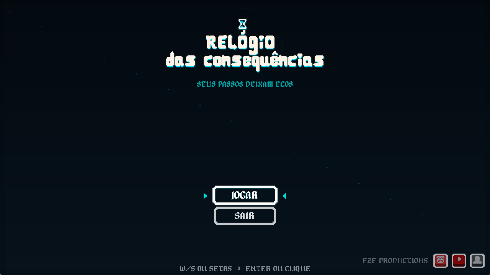

O Relógio das Consequências
A complete game in five days, driven by a single mechanic
(“The Clock of Consequences”) A 2D top-down puzzle-action game built in 5 days for NoNeJam 13, my first game jam. Your movements are recorded: when you create a time echo, a copy of your past self replays your path while you play a new timeline.
- Type
- 2D puzzle-action game
- Role
- Solo developer
- Deadline
- 5 days, during NoNeJam 13
- Tools
- GameMaker · GML

Problem and goal
The jam theme
The theme was Chain Reaction / Butterfly Effect. Instead of using it only in the story, I turned it into the core mechanic: something you do now triggers consequences a few seconds later.
The goal
Ship a short but complete experience in 5 days: a clear mechanic, a gradual introduction, puzzles, a visual identity, sound, a menu, a beginning, middle and end — and a final boss.
My role
Solo development: programming, project direction, game design, level design, visual identity, production and systems integration. Sound effects come from the 400 Sounds Pack (by Cafofo), and the fonts are Alagard and Algerian, all credited in the project.
Technologies
- GameMaker
- GML
- Level Design
- Git & GitHub
Core mechanic: the time echo
- RecordDuring a level, the game records the player's movements.
- Create the echoPressing Space turns the recorded path into an echo.
- ReplayThe echo spawns at the start and repeats every recorded step.
- CooperateThe player returns to the start and acts alongside their own past.
This lets the player press two plates at once, keep a mechanism active while taking another path, push boxes into place and open doors with synchronized actions. I also implemented:
- Top-down movement with collision and directional sprites.
- Pushable boxes, pressure plates and time plates.
- Doors and barriers opened by synchronized actions.
- Quick level restart and room transitions.
- Final boss with projectiles and attack patterns.
- Time rewind: boss attacks send the player back to an earlier position.
- Menu, victory screen, sound effects and visual feedback.
- Time echoes: recording and replaying the player's actions.
Technical decisions
- The theme became the mechanic. Every level, including the boss, uses the idea of actions that cause consequences later.
- Recording and replaying kept separate.
obj_time_managerrecords;obj_echoreplays the sequence. - Failing should be cheap. In a trial-and-error puzzle, restarting a level is instant.
- Credited third-party sound and fonts. Jam time went into gameplay, not into making audio from scratch.
Challenges and solutions
Five days for a complete game
There were more ideas than time. The risk was ending the jam with several half-finished mechanics.
Scope control
A single core mechanic guided every decision. Several ideas were simplified or cut to guarantee a beginning, middle and end, sound and polish.
Teaching an unusual mechanic
Cooperating with your own past isn't intuitive, and game jam players usually only play for a few minutes.
Step-by-step progression
The flow goes from the menu to the echo tutorial, then the box tutorial, the main puzzle and the boss: each system appears on its own before being combined.
Replaying the player's actions exactly
The echo only works if it reproduces the recorded path faithfully, at the same pace.
A time manager + an echo object
Movements are recorded during the level, and when an echo is created it spawns at the starting point and replays the stored sequence.
Bringing the theme into combat
The boss needed to use the idea of time, not be just another fight.
A position history
The game keeps a short history of the player's positions. Some boss attacks force the player back to where they were moments earlier.
Verifiable results
- Jam version finished on time and published on itch.io, with a Windows download.
- Full source code on GitHub, with a README covering mechanics, controls and project structure.
- Development process recorded on video (in Portuguese) on the FZF Dev channel.
What I learned
More than implementing systems, the biggest challenge was deciding what really needed to be ready for the idea to become a complete game in five days.
- Scope control and prioritization under a deadline.
- Game design driven by a single core mechanic.
- Level design that introduces systems gradually.
- Finishing and shipping, with visual and audio feedback.